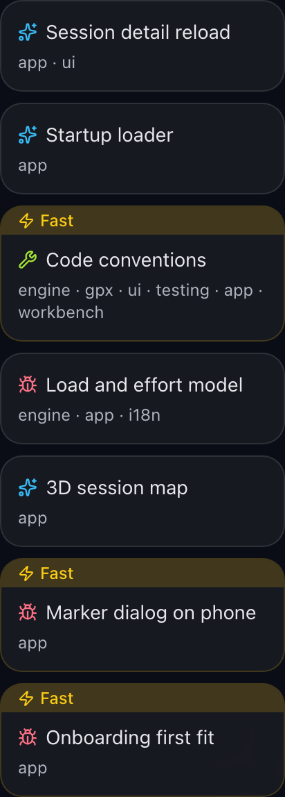

R3"Fast" banner inside the card, yellow border
A small card gets a yellow "Fast" banner with a Zap icon as its top strip, edge to edge, and a border in the banner's colour. No list padding, no corner tag. Replaces R2 and R1.
tools/workbench/site/src/app/ItemCard.tsx:42, :46-56.
Idea column of the running board · before: R1 corner tag · after: R3

